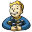
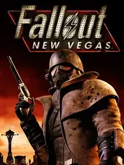

Fallout: New Vegas |
|
| Tiempo de juego | 1m 2s |
| Última actividad | 17/11/2025 23:28:10 |
| Añadido | 23/9/2025 11:54:21 |
| Modificado | 2/12/2025 23:22:43 |
| Estado de finalización | Jugado |
| Librería | Playnite |
| Fuente | |
| Plataforma | PC (Windows) |
| Fecha de lanzamiento | 19/10/2010 |
| Puntuación de la Comunidad | 87 |
| Puntuación de la Crítica | 82 |
| Puntuación de usuario | |
| Género | Role-playing (RPG) Shooter |
| Desarrollador | Obsidian Entertainment |
| Editor | 1C/Cenega Bandai Namco Entertainment Bethesda Softworks |
| Característica | Single Player |
| Enlaces | Steam 🌟Ultimate Edition |
| Tag | Voz y Texto en Español |
A veces, para hacer el mejor juego de una saga, tenés que llamar a sus creadores originales. "Fallout: New Vegas" es el resultado de ese milagro: el estudio Obsidian, formado por los capos que hicieron los Fallout clásicos, usando la tecnología del Fallout 3. El resultado es la fusión perfecta: un RPG en primera persona con el alma, la escritura y la libertad de los originales.
Acá no salís de una bóveda. Sos un simple mensajero al que le pegan un tiro en la cabeza y lo dan por muerto en el desierto de Mojave. Tu búsqueda de venganza te termina metiendo en una guerra a cuatro bandas por el control de la Represa Hoover y la ciudad de New Vegas. Es un western post-apocalíptico con una historia espectacular.
Pero la verdadera genialidad de New Vegas es la libertad de rol en serio. Tus habilidades (los skills) no solo sirven para el combate. Con un personaje carismático podés resolver misiones enteras a puro chamuyo; con uno inteligente, podés hackear una solución. El juego reacciona a quién decidís ser, y tus decisiones con las facciones (la RNC, la Legión de César, etc.) cambian el mapa político para siempre.
El desierto de Mojave es un escenario brutal, lleno de personajes memorables, humor negrísimo y esa moralidad gris que hizo famosos a los primeros juegos. Y sus cuatro expansiones DLC ("Dead Money", "Honest Hearts", "Old World Blues" y "Lonesome Road") son, sencillamente, de las mejores que se han escrito jamás para un videojuego.
"New Vegas" es una clase magistral de cómo escribir un RPG. Es un juego que respeta tu inteligencia y te da las herramientas para que forjes tu propia historia en su mundo. Por su narrativa brillante y sus consecuencias reales, muchos lo consideran no solo el mejor Fallout, sino uno de los mejores RPGs de todos los tiempos.